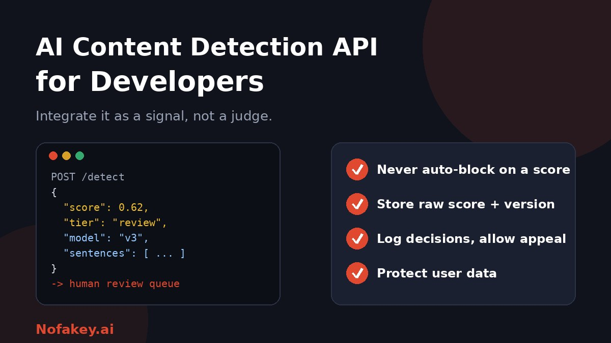

Adding AI detection to a product looks easy: send text, get a score, act on it. The hard part is what happens next. A badly designed integration can reject honest users, leak private content, or quietly break as models change. This guide is for developers who want to integrate an AI content detection API in a way that is useful, fair and maintainable.
What these APIs typically provide
Providers differ, but most offer something like this:
- An overall score for how much the text resembles AI output.
- Sentence- or paragraph-level signals that show which parts triggered the result.
- Metadata such as word count, language and model or version information.
- Extra checks, such as plagiarism, in the same call.
- Modes for synchronous responses or asynchronous jobs with a callback.
- Other media, in some cases, such as images, audio or video.
Check each provider's own documentation for exact fields, limits and pricing. Fields and behaviour change over time.
Know the limits before you build
| Limit | What it means for your design |
|---|---|
| Scores are probabilities | Never present a score as a fact or a verdict |
| Errors both ways | Plan for false positives (honest users flagged) and false negatives (AI text missed) |
| Short or edited text | Set a minimum length, and expect weaker results on edited, translated or formatted content |
| Group differences | Formal writing and non-native English can be flagged more often. Test for this on your own users |
| Model drift | New AI models and detector updates change results over time |
| Vendor claims | Published accuracy usually comes from the vendor's own tests, not yours |
See are AI detectors accurate? for the background.
How to evaluate an AI detection API
- Build a labelled test set from your own domain: content you know is human, content you know is AI-generated, and realistic mixes and edits.
- Include edge cases: short text, technical writing, other languages and non-native English.
- Run the set through each candidate and record scores, latency and errors.
- Measure error rates at several thresholds, not just overall accuracy. Look at false positives and false negatives separately.
- Test stability. Send the same text twice and with small edits. Scores should not swing wildly.
- Check operational fit: rate limits, batch support, async mode, SDKs, error messages and uptime.
- Review data handling: retention, whether submissions are used for training, regions, and access controls.
- Estimate cost at your real volume, including retries and re-scans.
Design: treat the score as a signal
| Design choice | Recommendation |
|---|---|
| Decision logic | Map scores to tiers such as low, review and high, not pass or fail |
| Thresholds | Keep them in configuration so you can tune without redeploying |
| Automatic action | Avoid blocking or penalising users automatically. Route to review or add context |
| Stored data | Save the raw score, tier, timestamp and API or model version, so results can be explained later |
| User experience | Use neutral wording such as "needs review", not "this is AI" |
| Appeals | Give users a way to respond or request review |
A minimal integration sketch
The example below is generic Python. Names, fields and the endpoint are placeholders, so adapt them to your provider's documentation. The point is the shape: timeouts, retries, tiering and no automatic rejection.
import os, time, requests
ENDPOINT = os.environ["DETECTOR_ENDPOINT"] # from your provider's docs
API_KEY = os.environ["DETECTOR_API_KEY"]
LOW, HIGH = float(os.getenv("T_LOW", 0.3)), float(os.getenv("T_HIGH", 0.8))
MIN_WORDS = 150
def check(text: str) -> dict:
if len(text.split()) < MIN_WORDS:
return {"tier": "too_short", "score": None}
for attempt in range(3):
try:
r = requests.post(
ENDPOINT,
json={"text": text},
headers={"Authorization": f"Bearer {API_KEY}"},
timeout=10,
)
r.raise_for_status()
data = r.json()
score = data["score"] # field name varies by provider
tier = "low" if score < LOW else "review" if score < HIGH else "high"
return {"tier": tier, "score": score,
"version": data.get("version"), "checked_at": time.time()}
except requests.RequestException:
time.sleep(2 ** attempt) # simple backoff
return {"tier": "unavailable", "score": None} # fail open, never reject
# Decision: never auto-reject. Send "review" and "high" to a human queue.Reliability and operations
- Timeouts and retries. Use backoff and idempotency where the API supports it, and cap retries so you do not burn credits.
- Fail safely. If the API is down, do not block users. Queue the check or skip it and record that it was skipped.
- Rate limits and batching. Respect provider limits, queue large jobs and use async endpoints for long documents.
- Caching. Cache results by content hash to avoid paying twice for the same text.
- Version pinning. Log which API or model version produced each result.
- Drift monitoring. Track score distributions over time and re-run your labelled set on a schedule.
- Secrets. Keep keys in a secrets manager, never in client-side code.
Privacy and compliance
- Send only what you need. Strip names, emails and other personal data where you can.
- Review the vendor's terms on storage, retention and use for training before sending user content.
- Be transparent. Tell users that content may be analysed and why, in your privacy notice.
- Follow your data protection duties, and consider a data protection assessment for sensitive uses.
- Limit internal access to scores and flagged content, and set retention limits.
Rules vary by country and sector, so check what applies to you. This is general information, not legal advice.
Fairness and human review
- Add a human step for any consequential outcome, such as removal, grading or account action.
- Audit outcomes. Check whether some groups, languages or writing styles are flagged more often.
- Avoid hard threshold penalties. A fixed cut-off will punish some honest users.
- Explain the process and give users a way to appeal.
- Document your policy. Our guide on AI detector policy for universities shows a framework you can adapt for platforms too.
Consider signals beyond text scoring
Text detectors are only one signal. Depending on your product, provenance information, account behaviour, duplication checks and disclosure fields can be more reliable. For example, in reviews and marketplaces, behaviour often beats wording. See how to detect AI-generated product reviews. If you let users declare AI use, our guide on how to label AI-generated content has wording you can reuse, and AI watermark detection explains one alternative method.
Scaling to batches
For back-office review of many documents, bulk workflows and calibration tests matter more than a single call. Read our guide to a bulk AI content checker for agencies for a calibration process that applies equally to API pipelines.
Conclusion
A good AI content detection API integration is mostly about restraint: measure the tool on your own data, keep thresholds configurable, store enough to explain every result, route uncertain cases to people, protect user data and watch for drift. Unsure about a claim or message? Paste it into our free checker for a quick first read, and find more guides on the Nofakey.ai blog.
Frequently asked questions
What does an AI content detection API return?
Typically a probability or score for the whole text, sometimes sentence-level scores, a confidence value, word count and metadata. The exact fields vary by provider.
Should an app block content automatically based on a detection score?
Generally no. Scores are probabilistic and can be wrong in both directions, so use them to route content to review or add context, not to reject it automatically.
How should developers choose a detection threshold?
Test the API on your own labelled samples, measure false positives and false negatives at different thresholds, and choose based on the cost of each error for your use case. Keep thresholds in configuration, not code.
Is it safe to send user content to a detection API?
Only after reviewing the provider’s data handling, retention and training policies and your own privacy obligations. Minimise what you send and tell users how their content is processed.
How do I keep an integration reliable over time?
Pin and log the model or API version, monitor score distributions for drift, re-test on your labelled set regularly, and handle timeouts and outages with a safe fallback.
Want a quick first read on a claim or message?
Run it through the checker